01you prove
The plant is healthy.
Run make status. It logs in as each of the four SFTP roles and talks to Postgres. If any role is down, stop. Do not run a batch.
COMMAND · make status


One operator surface, one fence, one judge. The seat is where the gates are graded.


An agent typing code is not a process. From here we work through three frameworks — Converge, Seamwise, Task-Spec — that turn the agent into a governed loop: design, cut, and prove.

The lens. The human doesn't juggle four tools — every kit's output comes back through Brief-Spec, which names the hour: explore, decide, implement, review.